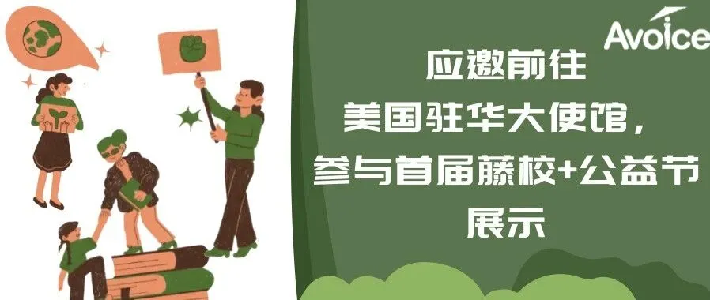
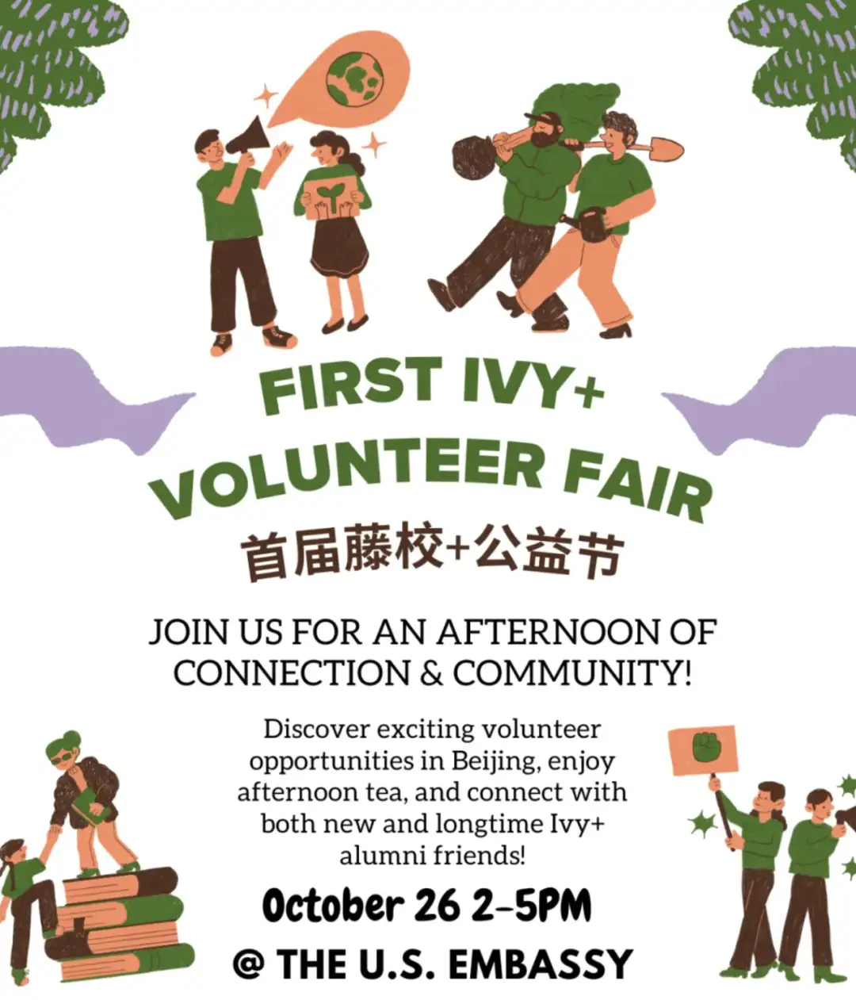
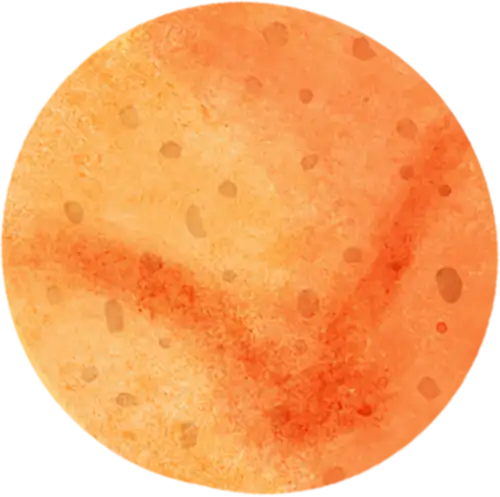

最后，让我们再来听一听参与公益节的AWDPI志愿者们的心声吧！

志愿者A
参加这次常春藤名校公益节，作为AWDPI的一员，我深刻体会到了“公益无国界，爱心共传递”的真谛。
活动中，每一个展位都代表着一个特别的故事，从关爱儿童成长、关注盲人群体发展，到助力环境保护，再到促进文化多样性，这些公益组织虽各具特色，但共同的目标是将爱与希望播撒到世界的每一个角落。通过与其它公益伙伴的交流，我们不仅收获了宝贵的经验和灵感，更建立了深厚的友谊与合作网络。这次公益节激励着我们继续前行，我相信每一份微小的努力都能汇聚成改变世界的力量。期待未来我们能够号召更多有想法的志同道合的朋友一起，携手更多的公益组织，在促进海外亚裔女性全面发展的同时，也为构建更加和谐、包容的世界贡献我们的力量！
志愿者B
特别高兴在这次活动中和许多同样热爱公益的伙伴有了深度交流！我了解了许多有趣的公益组织，大家所属的领域非常多元，但都能感觉到大家对自己在做的事和慈善事业的热爱！感谢主办方，希望以后有更多这样交流的机会。希望我们的世界越来越好！
志愿者C
通过这一次藤校公益节，我了解到了很多不同切入点、不同领域的公益组织，同时和每一个组织都有了一些交流，或是深度链接或是简单了解。这一次公益节其实提供了一个非常难得且宝贵的平台，让公益声音集中在一起向公众展示。公益其实是很漫长且简单的一条路，如果在前行过程中，能够发现志同道合的同路人，能够得到过路人的肯定和鼓励，相信我们也会走得更加久更加远～
在未来，AWDPI也会继续努力，坚持愿景与宗旨，持续完善海外华人女性救助体系，进行社会问题以及学术研究等多个层面的深入讨论，带着大家对我们的支持与祝福一起成长，努力创造更加美好的未来！
撰稿丨武静怡
排版｜池一诺